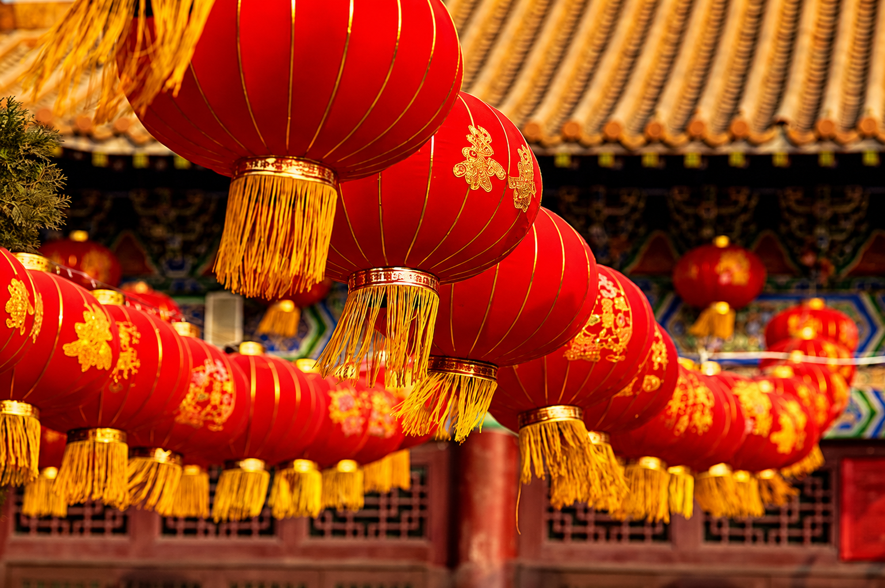
Nuestra Tradicion
Descubre la historia, los simbolos y las costumbres
que hacen unico al Festival de los Faroles
Tradiciones Principales
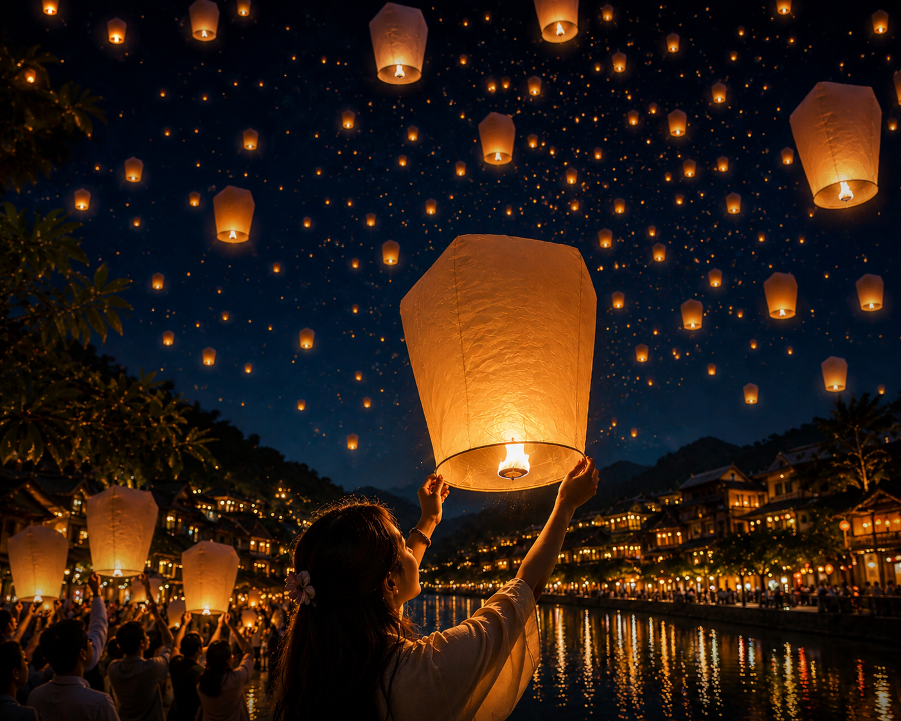
1. Encendido de faroles
Los faroles iluminan la noche como símbolo de esperanza, prosperidad y nuevos comienzos. Cada luz representa un deseo para el futuro.
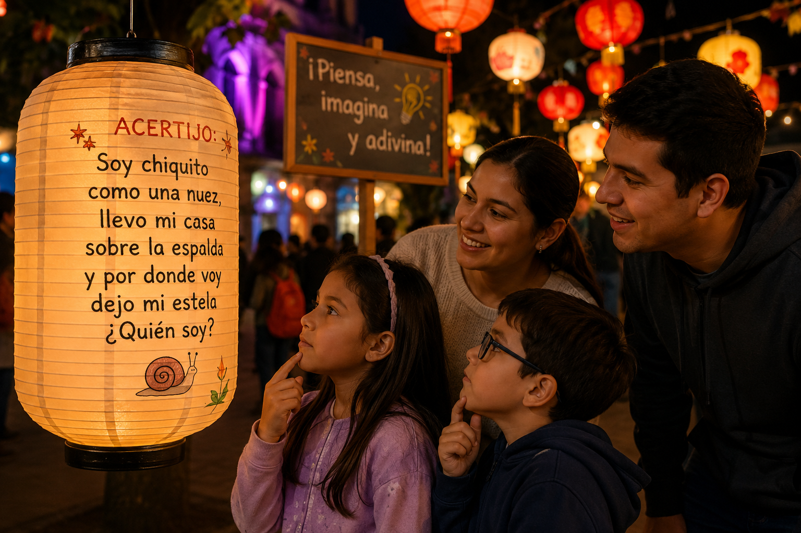
2. Acertijos
Una tradición popular consiste en resolver acertijos escritos en los faroles, una actividad que combina diversión, ingenio y participación cultural.
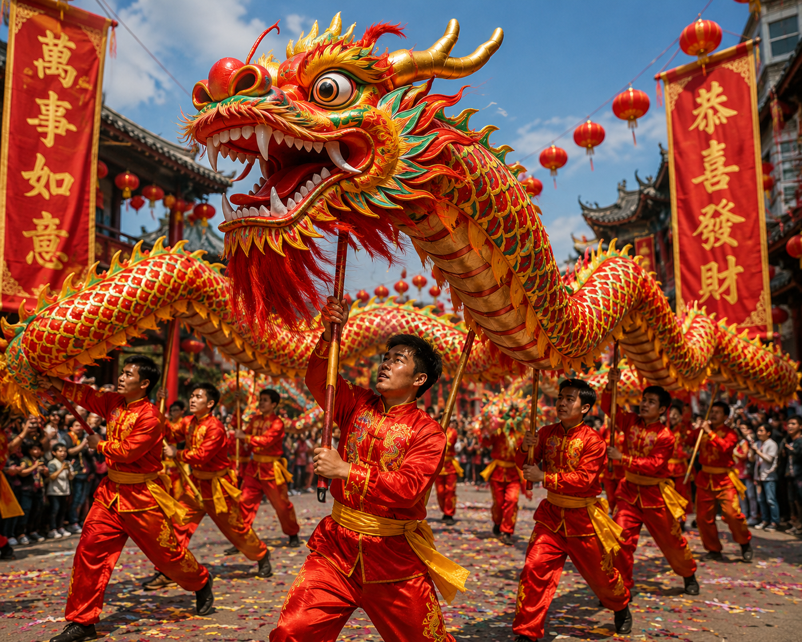
3. Danza del dragón
La danza del dragón representa fuerza, energía y buena fortuna. Su movimiento simboliza protección y prosperidad para toda la comunidad.
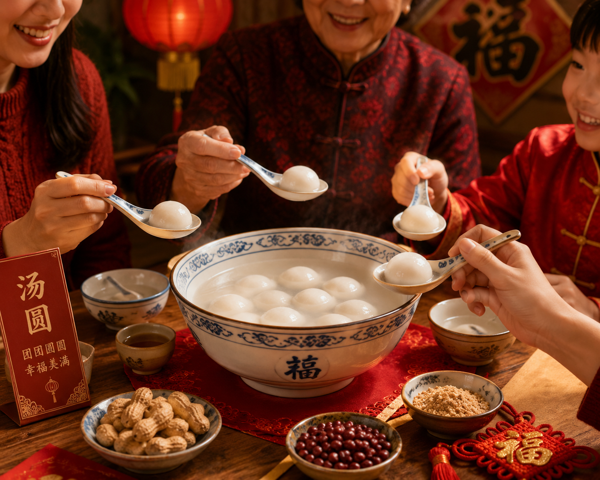
4. Comida tradicional
Durante el festival se comparten platos tradicionales como el tangyuan, símbolo de unión familiar, felicidad y celebración compartida.
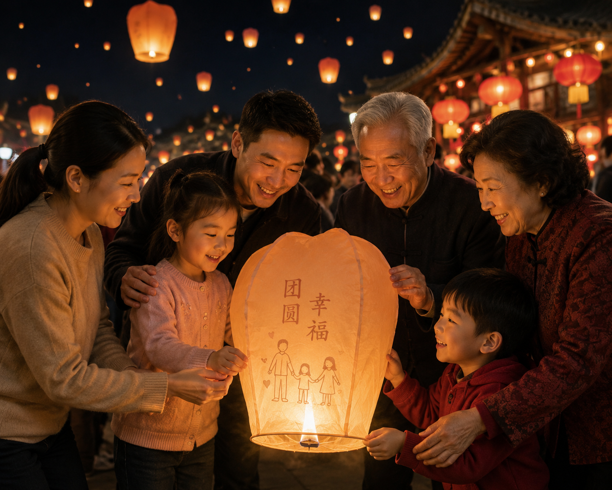
5. Unión familiar
El Festival de los Faroles reúne a familias y amigos para compartir momentos especiales, reforzando los lazos afectivos y las tradiciones heredadas.
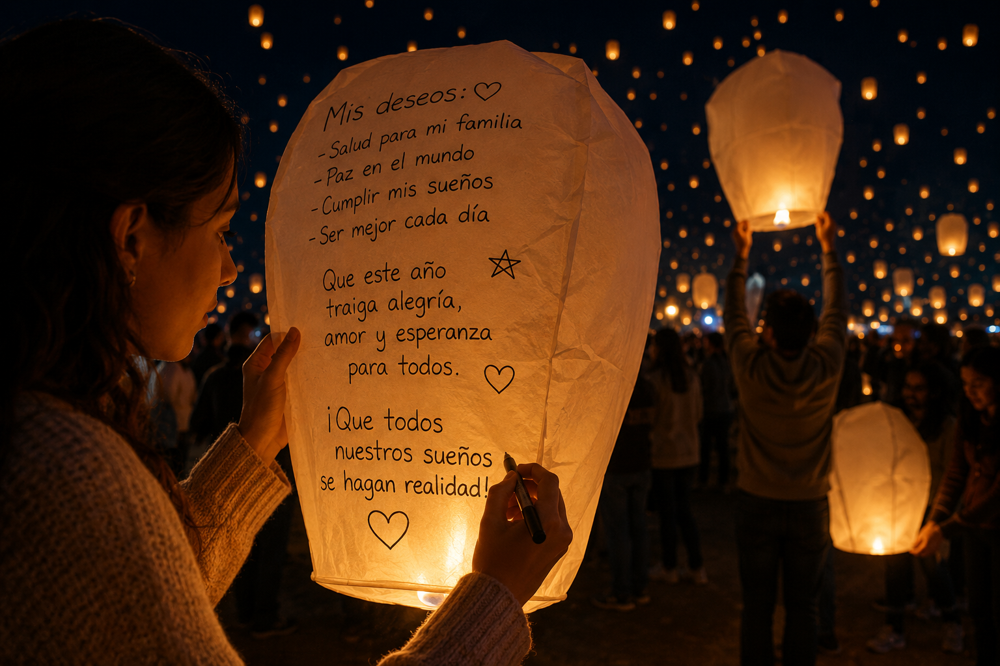
6. Deseos y esperanza
Muchas personas escriben deseos y mensajes de esperanza antes de liberar faroles, simbolizando sueños, ilusión y buenos augurios para el futuro.
Historia del Festival
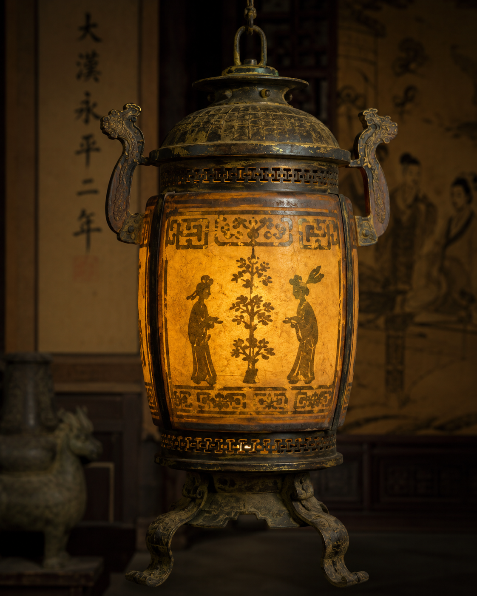
Siglo II a.C.
Primeras referencias históricas al Festival de los Faroles durante la dinastía Han en China.
Siglo VII d.C.
La tradición se consolida durante la dinastía Tang, extendiéndose a todo el Imperio.
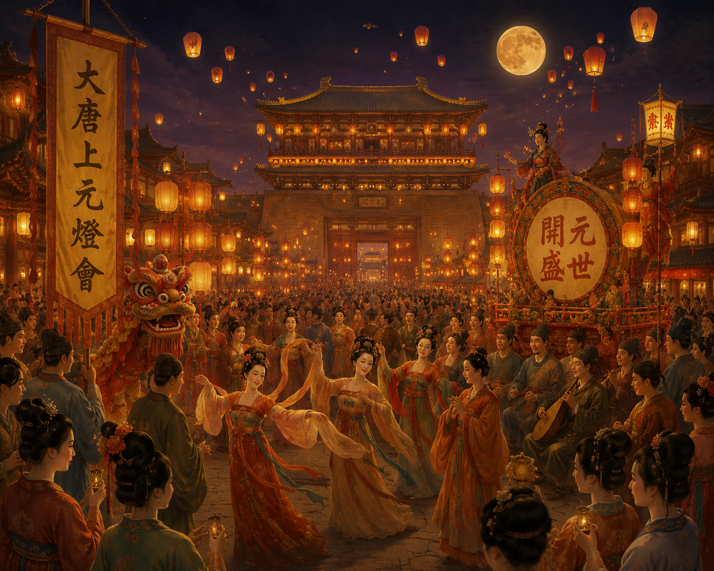
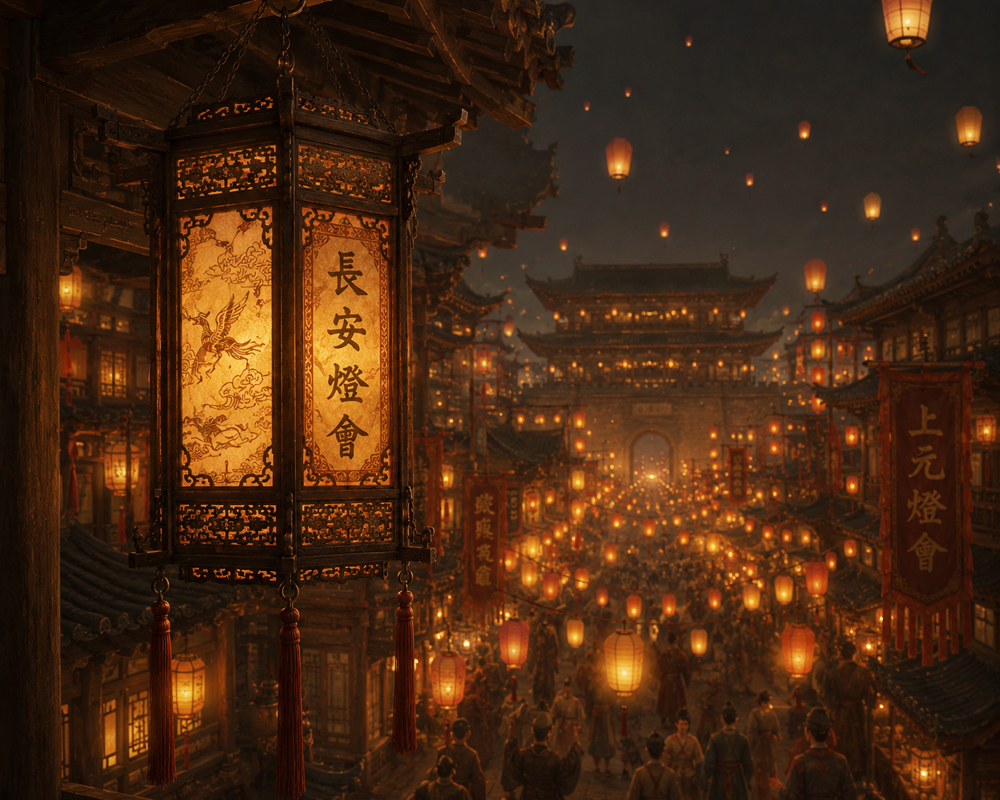
Siglo XV
Los faroles elaborados llegan a ser obras de arte, con figuras de animales y personajes legendarios.
Siglo XX – Hoy
El festival trasciende fronteras y se celebra en todo el mundo como símbolo de cultura y esperanza.
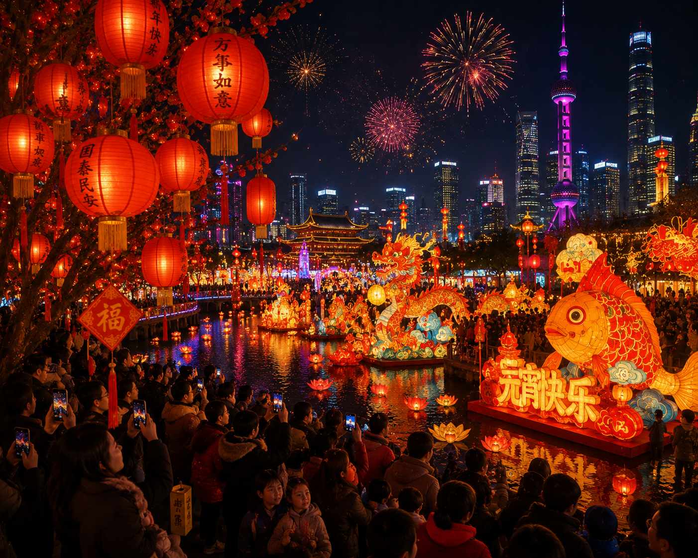